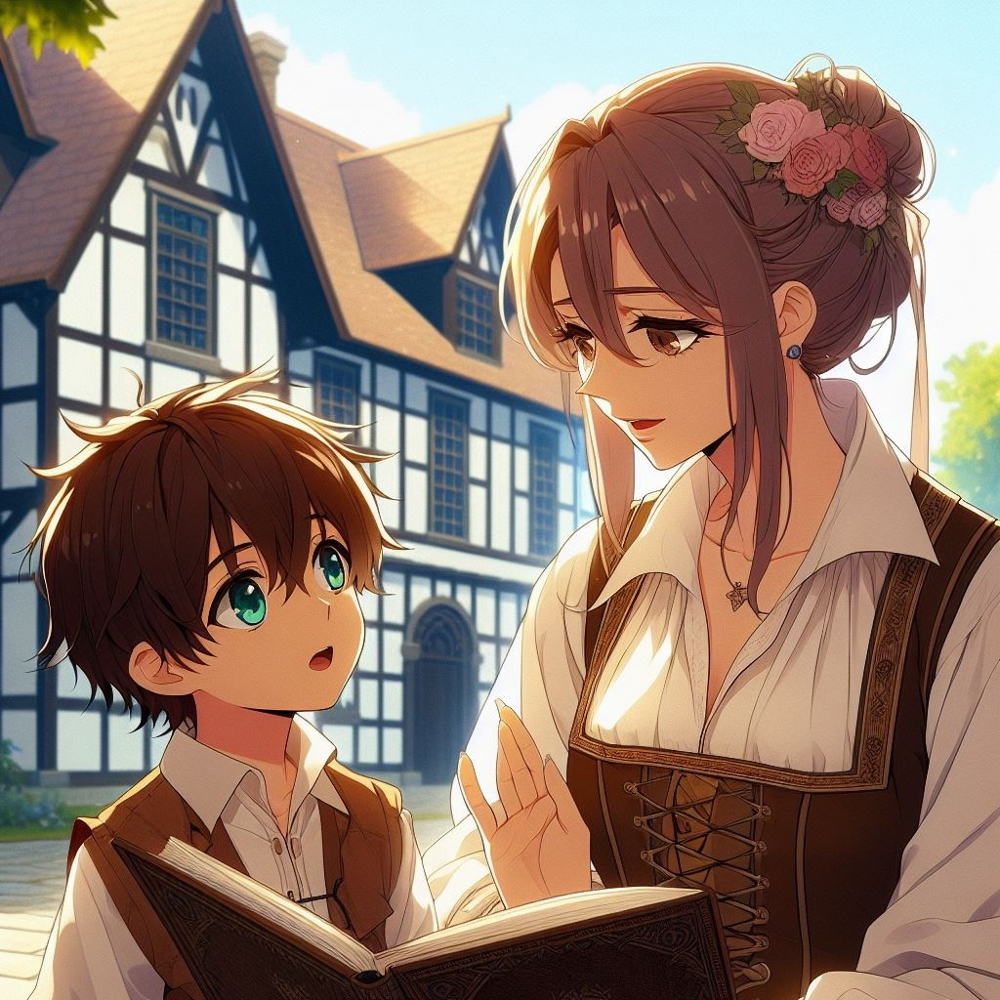

1 page

Что вершит судьбу человечества? Жизнь, или ожидание смерти - заставляет тебя двигаться дальше? Однажды и ты сможешь пройти свой путь до конца. Но сможешь ли ты вспомнить все моменты своей жизни после её окончания? Существует ли в этом смысл? Почему у каждого живого существа есть свои рамки в мире? Кто-то может летать, а кто-то не может. Почему люди должны сидеть взаперти - как птицы в клетках, ведь пташки могут летать, но человек ограничил им доступ к свободе. Так кто ограничил людям возможности? "Почему я должен сидеть в этой стереотипной для людей клетке, во избежание опасности, которой не было уже много лет, быть может ничего и не существует на той стороне мира?"- Подумал Кацуми.
В юношеские годы, мама рассказала мне историю об этом большом загадочном мире: В далеком и загадочном мире, где судьбу решает человек, произошло неожиданное событие. Величественные королевства Белое Инь и Черный Янь столкнулись, множество противоположностей и споров повлияло на острое лезвие судьбы. Ведь теперь границы разделяли людей, отправившихся по полностью противоположным путям.
Со временем королевства укрепились, прошло много лет, но ни один человек из Инь так и не переступил порог Янь. Чем могло быть вызвано такое решение? Может быть, это было из-за страха или предубеждений, присущим обоим королевствам? Или одержимость своими истинными ценностями, не позволяла проникнуть на территорию Янь? Для обычных людей Король нашего королевства не уточнил, но думаю тебе предстоит всё узнать мой дорогой, мы с папой тебе в этом поможем. И именно после этих слов, я на мгновение ощутил необычное чувство чего-то волшебного и необычного - исходящего от мамы, не знаю на что это было похоже, но я не придал этому значения.
Живу я жизнью обычного начинающего мечника. Папа допоздна работает ради меня - за что я его очень люблю. Он обеспечивает нам с мамой наши прихоти. Благодаря нему, я стал показывать успехи в своих начинаниях, ведь я хочу узнать что же там.. Там за нашими землями.. Не стена же там на весь мир, ни край, ни обрыв.. Что то от нас скрывает король, и мне нужно быть сильным, и наконец достичь своей цели - узнать об этом мире правду! Обучаюсь я довольно в скромном месте, но с очень опытным и мудрым дедушкой - который в своё время сражался с чёрным королевством Янь. Постоянно спрашивал у него об том королевстве, но Сенсей всегда уходил от ответа, и скрывал все подробности, возможно ему приказали не раскрывать подробности.
День за днём, ночь за ночью я тренировался, и стал наголову выше своих сверстников. Родители гордится мной. Всё было отлично, но такая жизнь была мне не по душе. Сидеть в этой клетке, и не думать о том - что находится за границами королевства - не давало мне покоя. И в один из дней, я решился прервать этот бесконечный бессмысленный цикл.
next page